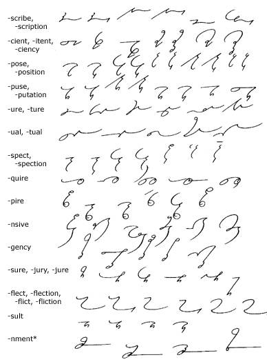
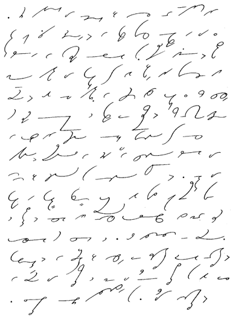

CHAPTER XI
Unit 31
227. Analogical
Word-Endings—Joined

Note: Occasionally a disjoined
prefix precedes a joined suffix, as in circumspect and
introspect, in which case the disjoined sign is written
above.
*The "jog" is omitted
in the termination -nment.
228. Key
to Analogical Word-Endings
1. subscribe, subscription,
describe, description, inscribe, prescription.
2. ancient, patient, impatient, efficient,
efficiency, deficient, deficiency.
3. compose, composition, propose, proposition,
suppose, supposition, dispose, disposition, oppose, opposition.
4. repute, reputation, dispose, disputation,
compute, computation, impair, amputation.
5. secure, picture, feature, nature, creature,
departure.
6. actual, mutual, equal, eventual, continual.
7. inspect, inspection, prospect, prospective,
expectation, circumspect, introspection.
8. require, inquire, acquire, requirement,
acquires.
9. expire, inspire, conspire, transpire, perspire,
aspire.
10. expensive, extensive, comprehensive, offensive,
intensive, defensive.
11. agency, emergency, exigency, urgency,
contingency.
12. assure, leisure, pressure, measure, treasure,
injure.
13. reflect, reflection, inflict, infliction,
conflict, confliction.
14. insult, result, consult, consultation.
15. assignment, refinement, consignment, adjournment.
229. Reading
and Dictation Practice
